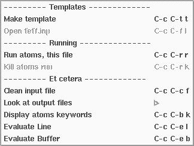
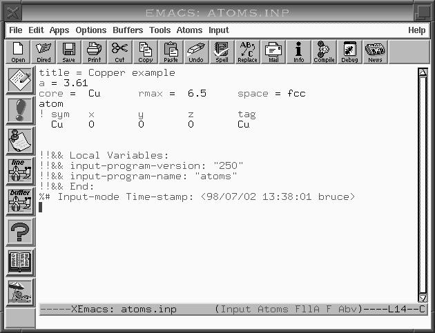

Ultimately we want to use FEFFIT analyze the fine structure @greek{chi,k} from the copper data. To get ready for that we need to run FEFF to generate a set of fitting standards and run AUTOBK to isolate @greek{chi,k} from @greek{mu,E}. But first, we need to run ATOMS to generate the appropriate input file for FEFF.
Our first chore, then, is to edit an ATOMS input file. It is most convenient to run ATOMS in the `feff' subdirectory, so begin editing this input file by typing
> emacs feff/atoms.inp
at the command line. I am assuming that you are currently in the `Cu/' directory. Since it takes some time to start up Emacs and since Emacs can hold many files at the same time, @fuse{} is best used by firing up Emacs only once and loading successive input files as you want to edit them. We will see how that is done as the tutorial progresses.
Once Emacs fires up, you will be presented with a blank screen. You
should see two important things on the mode line at the bottom of the
Emacs window. Near the left side of the mode line it should say
atoms.inp to indicate that you are currently editing that file.
Somewhere to the right of center you should see the words Input
and Atoms. These indicate that you are in Input major
mode and, since you are editing an ATOMS input file, in
Atoms minor mode. At the top of the Emacs window in the menu
bar, you should see menus labeled Input and Atoms.
Because the file was named `atoms.inp', @fuse{} assumed that the
file is intended to run ATOMS and so placed the buffer containing
the file into Atoms minor mode. As the tutorial progresses and
we edit other input files, you will see that the minor mode changes
appropriately from buffer to buffer.
In Emacs, a major mode is a state of the program which is customized for a particular editing chore. A minor mode is a state which modifies certain features and behaviors of Emacs. In this case the major mode is a state customized for editing input files to FEFF and the UWXAFS programs. Then each program has a minor mode associated with it which modifies the behavior of input major mode appropriate to the program. The modes in @fuse{} interacts well with most minor modes which offer specific editing features which are offered by emacs.
@ifnotinfo
Now that you have a buffer open in front of you, click mouse-1 on
the Atoms menu. The contents of this menu are shown in
Figure 2. If you click any mouse button anywhere else on your screen,
the menu will disappear without anything selected. You can use this
menu to perform the rest of the tasks in this section.
Figure 2: ATOMS mode pull-down menu

The first thing to do is to make a template for this input file. This
is done by typing C-c C-t t, choosing Make template from
the Atoms menu, or clicking on the top-most icon in the toolbar.
When you do this, you will be asked a question in the minibuffer. At
this point, @fuse{} is asking which crystal class your material belongs
to. For copper, the correct answer is c which is short for
cubic. Before answering you can hit the tab key to see a
list of all possible answers. This function (and many others in
@fuse{}) operates with word completion. Since cubic is the only crystal
class beginning with c, it suffices to just enter c in this
case. After this, a template appears in the buffer. You will notice
that this template has a space for the a lattice constant, but
not for b or c or for any of the angles. Had you chosen a
crystal class of lower symmetry, appropriate keywords would have been
placed in the template.
Notice that the template has several salmon colored markings. These are immediately before hotspots in the template. A hotspot is a place in the template where you are expected to insert a value. The markings provide a visual cue for where to place the values. You can move between the hotspots in all the standard ways of moving the screen cursor, but there are two special shortcut key sequences. M-n and M-p jump to the next and previous hotspots. When you are done filling in the keyword values, you can leave the markings as they are, or erase them with C-c C-t c.
The a lattice constant of copper is 3.61 and the space group is
F m 3 m, although ATOMS also understands fcc as a
shorthand for this space group. There is a copper atom at the
coordinates (0,0,0) and a cluster radius of 6.5 Angstroms is
appropriate. The central atoms is, obviously, Cu. Save this file by
striking C-x C-s. The buffer should now look like Figure 3.
Notice that when you saved the file, some new lines were written to the end of the file. Thie first line looks like this:
!!&& Local Variables:
@fuse{} uses the Local Variables list as a way of configuring itself. It saves information about the input file in these lines so that the next time you edit it, you will be in the same state as the last time. One of the most important uses of these lines is to identify the program associated with the input file. For example, you might wish to rename this input file `cu.inp'. The next time you edit `cu.inp', @fuse{} can read from the Local Variables list that `cu.inp' is an input file for ATOMS. Thus you can name your input files anything, not just by the name of the program.
With the input file complete and saved to disk, it is time to run
ATOMS. Do this by hitting C-c C-r r, by selecting Run
atoms, this file in the Atoms menu, or by clicking on the
exclamation point icon in the toolbar. If you are running under
X-windows, @fuse{} will open a small frame in which to display the
run-time messages from the program. When ATOMS is done, @fuse{}
will beep and you will see a message in the echo area.
ATOMS Let's look at a few things before finishing with the
ATOMS input file. Type C-c C-b k, select Display atoms
keywords from the Atoms menu, or click on the question mark icon
in the toolbar. The frame will split into two windows, and a list of
keywords recognized by the ATOMS program will be displayed in the
bottom window. When that key sequence is hit in any of the minor modes,
you will be presented with a list of keywords appropriate to that
program. Each minor mode menu has a Display keywords item and
each minor mode toolbar has a question mark icon that is bound to this
function. Note that the screen cursor in positioned in the keyword
window. After examining the list of keywords, type C-x 0 to close
the keyword window and return to the input file window. (If you get
lost among your buffers, remember to use C-x b or the
Buffers menu.)
Now hit C-c C-b d and then hit ret or click on the book icon in the toolbar. A second frame will open displaying the info version of the ATOMS document. There are online documents for several of the programs covered by @fuse{} and for @fuse{} itself. (The notable exceptions are AUTOBK and FEFFIT.) You can peruse the document or hit C-x 5 0 to make the document frame disappear.
Now it is time to run FEFF.
Figure 3: Completed ATOMS input file

Go to the first, previous, next, last section, table of contents.